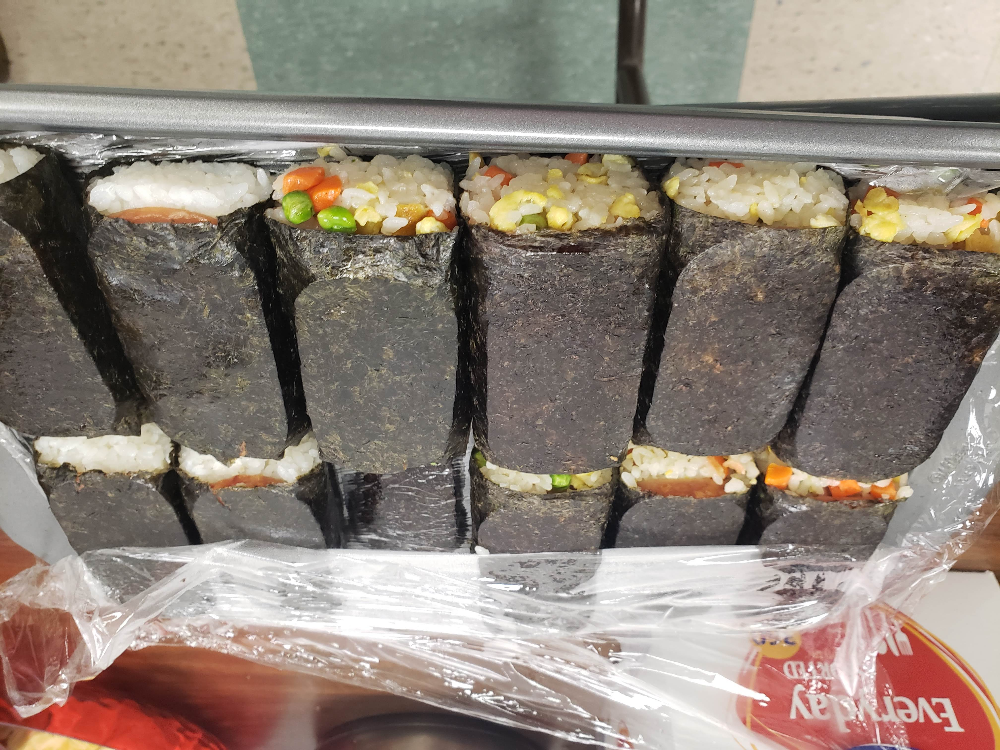

Kenneth Sloane
Hello TRACE Camp! My name is Kenneth Sloane. I am a senior Industrial Engineering major graduating on August 6th, 2021. I was born in Okinawa, Japan and raised in Charleston, SC. I'm looking forward to learning together with y'all!
Hobbies
-

Cooking
I really enjoy cooking at home! Here's a picture of some fried rice spam musubi I brought to a potluck.
-

Clemson Asian Student Association
Some of my best memories from college are from my time in the Clemson Asian Student Association. This past year I was actually President. Look at all these good lookin' people.
-

Video Games
In my free time (or when I'm procrastinating), I like to play videos games. Currently I'm playing Stardew Valley on my Switch! Do you want to see the spreadsheets I've made?
Pets
Guppy
Here is my Guppy! She is a beagle mix. My family adopted her as a puppy in July of 2010. She got her name from the huge stomach she had as a puppy, which reminded us of a guppy/goldfish or something I guess?
Coco
Here is Coco! She is a russel terrier that we adopted in June of 2017. Her name is actually short for "Coconut" on account of her whispy, white fur that reminds us of shredded coconut.